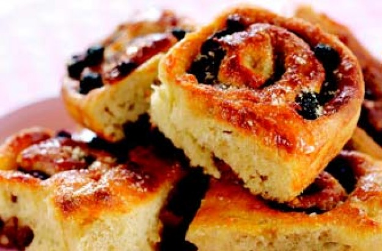

What do I eat in Cambridge?
While in Cambridge, be sure to stop by a pub for a classic plate of fish 'n chips, or alternatively grab a table at Fitzbillies and indulge in a delicious Chelsea Bun.
Fish 'n Chips
Burgers
Chelsea Buns